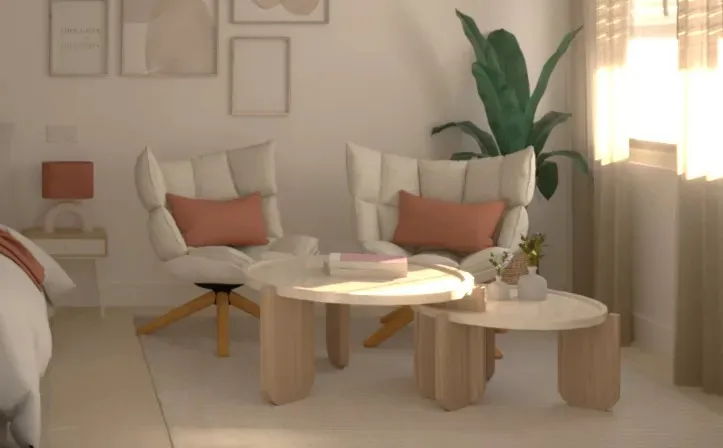

Transformación de Local · Madrid
Proyecto residencial pensado como vivienda, con decisiones claras y un resultado coherente.
Contexto
Dar sentido doméstico a un local existente.
Este proyecto parte de un local de 110 m² en Madrid que se concibió como una vivienda compartida, con un programa exigente: habitaciones con baño y espacios comunes capaces de articular el conjunto. El reto no era solo “encajar” estancias, sino construir una lógica de vivienda: recorridos claros, atmósfera calmada y una lectura ordenada del espacio.
Imágenes del local antes de la intervención.


Objetivo
Ordenar un programa complejo sin perder calidad espacial.
El objetivo fue organizar el espacio como una vivienda compartida: que se entendiera de un vistazo, que los recorridos fueran naturales y que las zonas comunes ayudasen a dar unidad al conjunto. Más allá del número de estancias, la clave estaba en cómo se relacionaban entre sí: privacidad, uso diario y coherencia general.


Propuesta
Recorrido, luz y decisiones contenidas para dar unidad.
La cocina se plantea como una pieza de uso cotidiano integrada en el conjunto, y las estancias se resuelven con una lógica de vivienda: proporciones ajustadas, mobiliario contenido y una imagen coherente que evita la sensación de “suma de habitaciones”.

Los dormitorios se plantean como espacios sencillos y equilibrados, pensados para un uso continuado y rotación de personas. La distribución prioriza la claridad, el confort y el almacenamiento integrado, con una selección de materiales resistentes y fáciles de mantener que permiten que las habitaciones envejezcan bien sin perder calidad ni coherencia con el conjunto.

Los baños siguen la misma idea: claridad, iluminación y durabilidad por delante de lo superfluo.

Resultado
Del diseño a la realidad, sin distorsiones.
El resultado confirma la intención del proyecto: las decisiones tomadas en fase de diseño se trasladan a obra con coherencia. La iluminación, especialmente en baños y recorridos, se ejecuta tal y como se planteó, de modo que el render funciona como guía real de ejecución y no como una imagen desconectada.
El conjunto se percibe como una vivienda pensada desde el uso: espacios fáciles de entender, cómodos de habitar y con una identidad serena, donde el diseño acompaña en lugar de imponerse.


{kind=link}